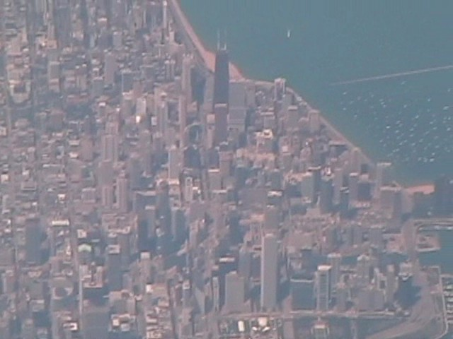
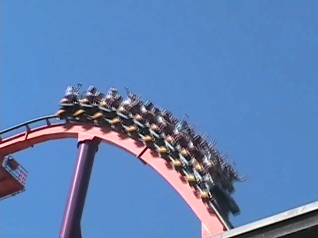
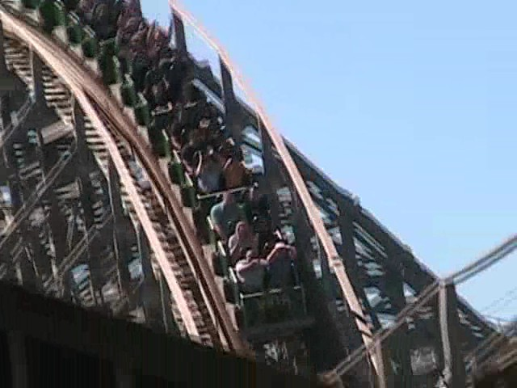
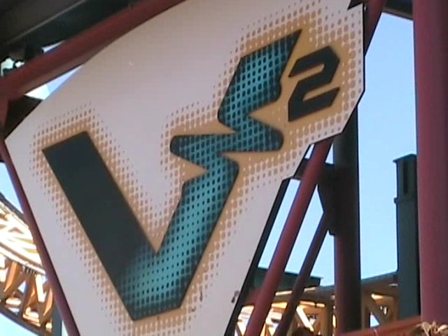
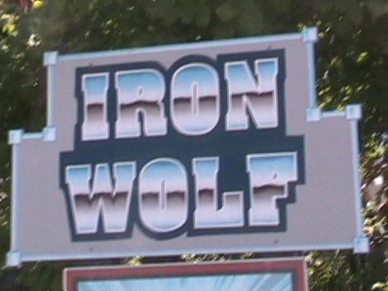
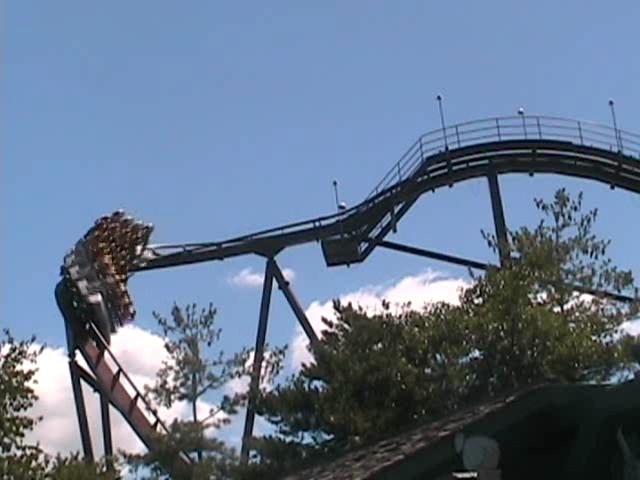
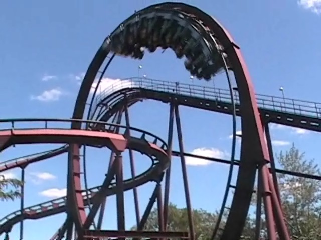
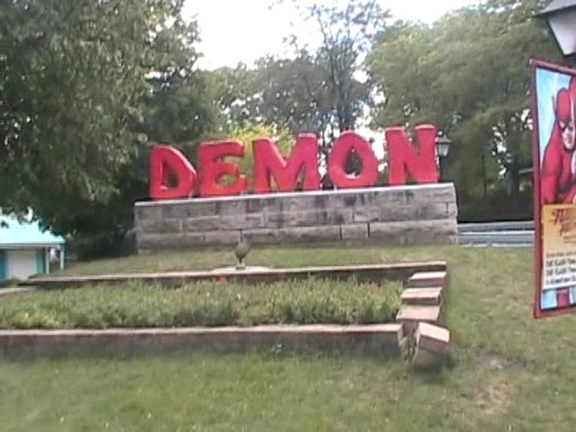
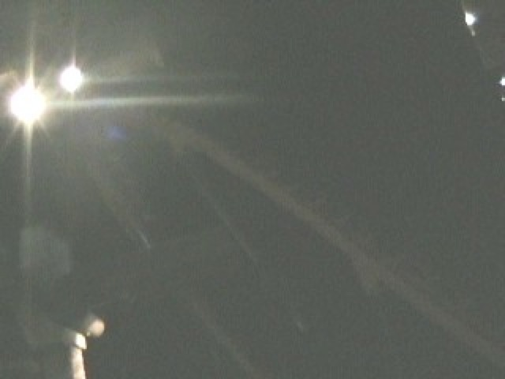

North of the Border Tour
Great Escape La Ronde Canadas Wonderland Michigans Adventure Six Flags Great America Kings Island Kennywood Knoebels Dorney Park
Next stop on the tour was Chicago.

Chicago. What a great city.
However, if you came to see pictures of Chicago, you better get out now as all you'll find here are pictures of Six Flags Great America.
For some reason, this looks better here than it does at CGA.
 Dude! We've gone 4 pictures without showing a rollercoaster. Well here's one now.
Dude! We've gone 4 pictures without showing a rollercoaster. Well here's one now.

Anyways, this is Raging Bull.
 It's a fun ride despite the awful trims.
It's a fun ride despite the awful trims.
We just had to do Giant Drop as all 2nd Generation Drop Towers are awsome.
Hey Cody. Too bad about Giant Drop being closed during your visit to Six Flags Great America.
 Up next is Viper.
Up next is Viper.
 Hey! I thought this was an old painful multilooper. Not a kickass woodie.
Hey! I thought this was an old painful multilooper. Not a kickass woodie.

Oh Well. Kickass Woodies are awsome. This is much better than any woodie in CA.
Up next is the Clone.
Unlike Canadian Batman, Original Batman is actually open and we can actually ride it.
The Original is always better and Batman is no exception.

Up next is V2.
 V2 would end up being my first normal Impulse Coaster.
V2 would end up being my first normal Impulse Coaster.
 Twisty Goodness.
Twisty Goodness.

Up next is Iron Wolf.

Iron Wolf is known for being the first ever B&M.

Meh, Cobra @ La Ronde is better.
 Up next is American Eagle.
Up next is American Eagle.
 It's big and fast. Kind of like Collosus.
It's big and fast. Kind of like Collosus.
 The only difference is that American Eagle actually RACES!!!
The only difference is that American Eagle actually RACES!!!

Next on the list is Demon.
This Demon is 1,000,000,000,000,000,000 to the 99th Power Times better than the one in California!
 Hey, why doesn't the Demon in California have that cool rock through the loop? Oh yeah. The Demon in California is a total peice of s**t.
Hey, why doesn't the Demon in California have that cool rock through the loop? Oh yeah. The Demon in California is a total peice of s**t.
 Ah Damn! Whizzer was closed during our visit.
Ah Damn! Whizzer was closed during our visit.
Next up is the bedtime coaster.
The riders in the train are gaining Zzzs, not speed.
 Pathetic Little Pretzal Loop.
Pathetic Little Pretzal Loop.
I'm still laughing at those who rode this twice.
We rode the Huss Frisbee here.
 45 minutes for the spinning mouse? I'm not THAT big of a credit whore.
45 minutes for the spinning mouse? I'm not THAT big of a credit whore.
I'm thinking of a certain someone. Can you guess what that certain someone is?
 "THIS IS FOR FORCING ME TO RIDE SUPERMAN ULTIMATE FLIGHT!!!!!"
"THIS IS FOR FORCING ME TO RIDE SUPERMAN ULTIMATE FLIGHT!!!!!"
 It was either ride Superman again or ride V2 again. I think I made the right choice.
It was either ride Superman again or ride V2 again. I think I made the right choice.
 The Holding brake on V2 is awsome!
The Holding brake on V2 is awsome!
Click here to see V2 in action.
What a funny little sign.
Bye. Hope you guys win the Coaster Race.
American Eagle at night.
 Our final ride of the day was Raging Bull.
Our final ride of the day was Raging Bull.

Raging Bull is much better at night.
Kings Island
Home